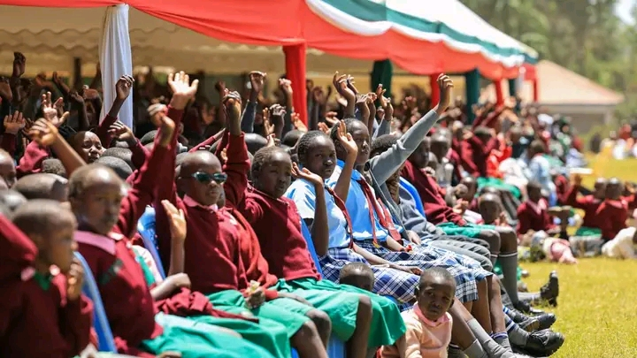

Delivering the Competency Based Curriculum with excellence — preparing every learner for success in school and in life.
Sergoit Primary School proudly delivers the Kenya Institute of Curriculum Development (KICD) approved Competency Based Curriculum, focused on developing practical skills alongside academic knowledge.
Our CBC delivery emphasises learner-centred teaching, critical thinking, creativity, and collaborative learning — preparing pupils not just for exams but for life.
Play-based foundational learning
Literacy, numeracy & life skills
Core subjects & electives
Specialisation & career pathways

A broad, balanced curriculum that develops every aspect of the learner.
English & Kiswahili Language
Mathematics & Applied Maths
Integrated Science & Agriculture
Environment & Citizenship
Art, Music & Performing Arts
Digital Literacy & Computing
Sports, Health & Wellness
CRE & IRE options
We believe great education extends beyond the classroom.
Football, athletics, volleyball and handball. Our teams compete at sub-county, county and national levels, producing champions year after year.
A thriving arts programme featuring choir, traditional dance, drama, and performance — as seen at county and national festivals.
Wildlife, gardening, and environmental conservation clubs that build stewardship of nature and community responsibility.
Debating, science, mathematics, and reading clubs that nurture intellectual curiosity and love of learning beyond the syllabus.
Give your child access to quality education and a bright future.